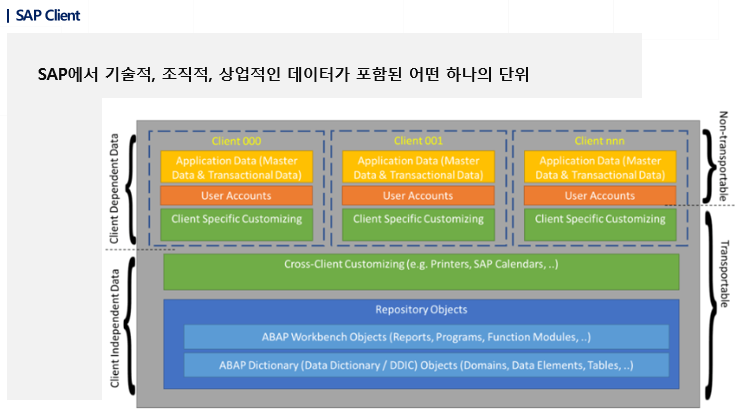

20220908 - CTS, VIEW
SAP client


Table은 client에 종속되어 있어서 반드시 어떤 client에 종속되어 있는지에 대한 정보를 table에 입력해야 함 → MANDT
STRUCTURE
Data 형식의 정의를 선언해둔 부분
프로그램에서 선언되거나, function에서 assign하여 실제적인 활용가치가 높음
- 90% 정도는 ABAP에서 사용하는 internal table을 위하여
- 10% 정도는 재사용을 위하여 선언
테이블과 동일한 형태지만 실제 database에는 생성되지 않는 객체로 ABAP Dictionary에만 존재하면서 data set을 가지지 않는다.
structure 각각 필드는 table의 field와 동일하게 정의되며 data element, 다른 structure 등을 포함할 수 없다.

se11


variant는 report에 매우 중요
CTS
개발 / QAS / 운영
개발 → 테스트 → 배포
CR (Change Request) - 변경분
CTS (Change Transport System) - 운영으로 변경분(CR)을 이관하는 행위
TMS (stms) - Transport Management System, CTS 관리
3개의 서버는 구분되어 있지만 NFS network를 공유
CR을 만드는 순간, co-file이 생성, 나머지 서버들이 TMS를 통해 해당 co-file을 참조하면서 내용 반영
VIEW
이미 존재하는 테이블에서 원하는 데이터만 가져올 수 있도록 미리 원하는 column만을 모아 가상적으로 만든 테이블
업무의 효율성을 위해 업무 단위별로 여러 테이블의 데이터를 합쳐야 할 때 사용

Database view
하나 혹은 복수개의 테이블에서 필요한 필드 만을 추출 (가장 일반적으로 사용)
필요한 테이블의 필드들이 여러 테이블에 나뉘어져 있어 합쳐서 보고자 하는 경우 주로 테이블 간의 키 값을 이용하여 교집합
projection view
하나의 테이블에서 필요한 필드 만을 추출
급여나 대내비같은 경우 테이블 자체를 오픈하기 어려워 필요한 필드만 선택해서 하나의 별도 테이블처럼 사용
maintenance view
여러 개의 테이블을 유지보수 할 때 사용
반드시 외래키로 연결되어 있어야 가능하며, 한 번에 데이터를 조회하고 변경하고 생성가능
help view
복수개의 테이블에 필요한 필드를 합집합으로 추출
Database view


Maintenance view


view field option
R - 오직 읽기만
H - 숨김처리 (화면에 조회되지 않음)
S - view 데이터가 활성화 될 때, 해당 필드 기준으로 subset 형성
- ex. a, b, c 필드 중 a가 S 옵션일 때, view 실행 시 a값을 입력하라는 팝업이 뜨고 입력된 값을 기준으로 b, c 입력
보통 normal로 두고 사용
key value를 변경해야 하는 경우 new entry를 생성해서 변경

read only - view 데이터는 읽기만 가능하다
read, change, delete, and insert - 읽기, 변경, 삭제, 추가 가능
read and change - 존재하는 view 데이터는 변경할 수 있지만 삭제되거나 추가 불가

Maintenance dialog table 유지보수기
table maintenance dialog는 maintenance view와 transparent table의 데이터를 관리하는 화면을 제공
utilities → table management generator


authorization group - table/view 데이터를 관리할 수 있는 구너한그룹
- 권한체크가 필요없을 땐, 보통 &NC& 선택)
function group - maintenance view dialog가 소속되어 있는 function group 선택
maintenance type - 1단계 또는 2단계
- 1단계는 모든 필드를 포함하는 overview 스크린을 바로 보여주고
- 2단계는 key field와 char type의 필드가 overiveㅈ 화면에 조회되고 모든 필드는 detail 화면에서 제공
maintenance screens - 화면의 내부번호, 버튼 (Find scr.Number)을 통해 시스템이 제안하는 번호 선택
recording routine - maintenance view에서 변경된 데이터를 request에 포함해 전송할 것인지 선택


SAP Certified Development Associate - ABAP with SAP NetWeaver 7.50
C_TAW12_750: SAP Certified Development Associate - ABAP with SAP NetWeaver 7.50
실습 없음